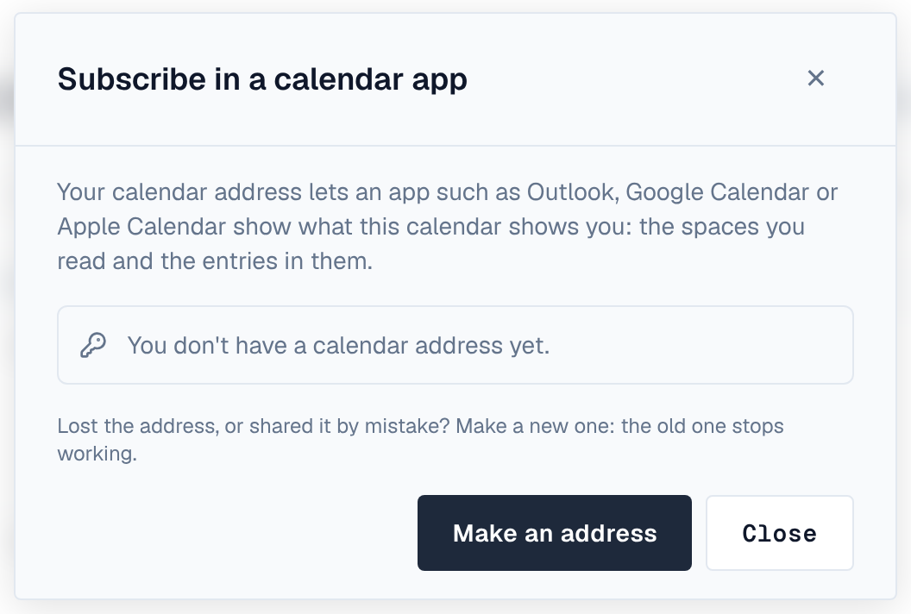

Everyone can subscribe to their Wiki calendar from a calendar app: events and leave of their spaces, scheduled publishes and review-by dates. Each person makes their own calendar address on the Calendar page with Subscribe. How people use it is in the user guide's Calendar; this page is what administrators need to know.

1. How a feed works
- The address holds a secret. It is shown once, when it's made; the Wiki keeps only a hash of it, so nobody, administrators included, can read it back.
- Each person has at most one address. Make a new address replaces it (the old one stops at once); Stop the address deletes it.
- A calendar app reads it without signing in, at /api/calendar/ical, through the web app like any other address. Keep query strings of that path out of your proxy's access logs: the secret is in the query.
- It shows what the person may see now: their current roles decide, so losing access to a space removes its entries from the feed.
- A feed covers 30 days back to a year ahead, at most 2,000 entries. Repeating events are sent as single occurrences.
- An address can only be made or replaced from a browser session, not with an API token.
2. When a feed stops by itself
- The person is suspended or deactivated, their directory is disabled, or they must change a temporary password.
- Their other sessions are signed out: a password change, Sign out other sessions, or an administrator ending their sessions.
- Their personal data is erased.
They then make a new address and give it to their calendar app.
3. Keeping feeds private
The secret travels in the address, because calendar apps can't send headers. The Wiki never logs request queries, but a reverse proxy may: leave queries out of the access log for /api/calendar/ical, or protect that log like the feeds themselves.
- If an address leaks, the person makes a new one; an administrator can also end the person's sessions, which stops it.
- Requests with an unknown address are limited per network address, so addresses can't be guessed at speed.
- Making, replacing and stopping an address are recorded in the audit log, and raise the calendar.feed.create and calendar.feed.delete events; a policy can refuse new addresses.